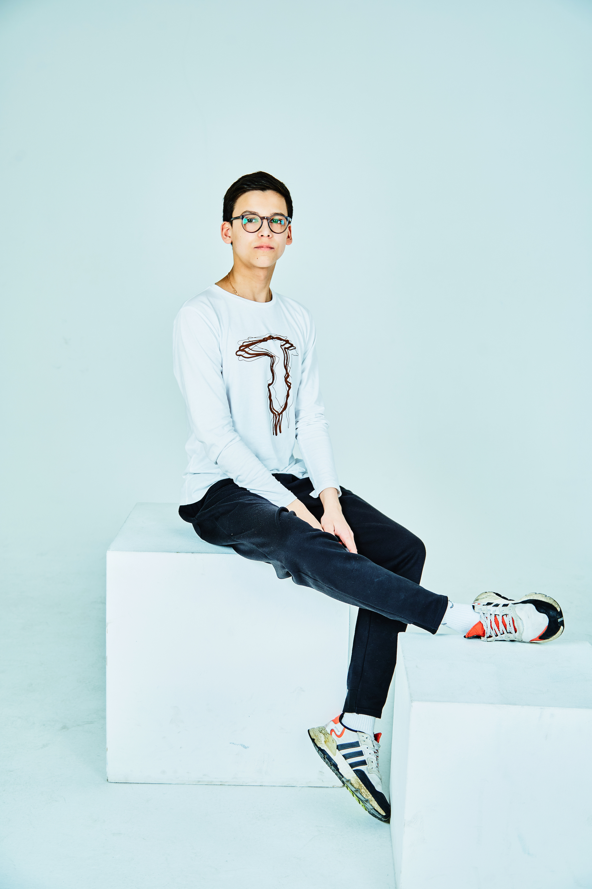

Не представляю свою жизнь без музыки, грустные осенние вечера провожу наедине с гитарой, наигрывая такие любимые классические мелодии. С большим интересом смотрю фильмы на английском языке и заслушиваюсь подкастами. Программирование - для меня не просто увлечение, а любимое дело , которому мне хочется посвятить себя. Необычное сочетание выходит - технарь с гуманитарным уклоном))